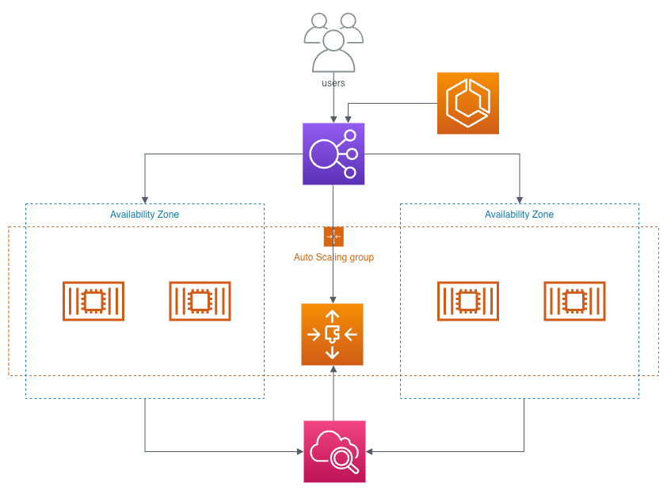
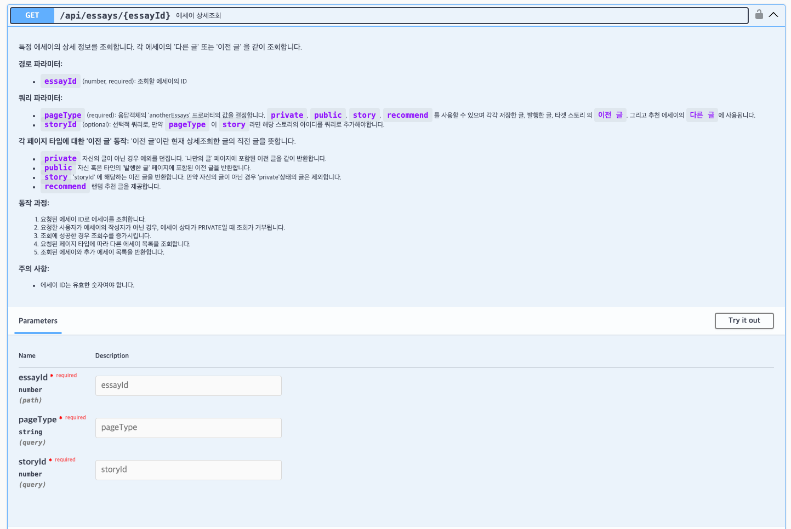

▣ 프로젝트 개요
깃허브
https://github.com/team-echoist/server
프로젝트 이름 및 소개
• 개인적인 감정과 감상을 솔직하게 표현할 수 있도록 익명성을 보장합니다.
• 사용자 글에 좋아요, 조회수, 스크랩 수 등을 표시하지 않아, 내면의 이야기를 막힘없이 쓸 수 있도록 합니다.
목표
개인적인 목표
개발자로서의 성장을 멈추지 않고, 실제로 사람들이 사용하는 가치 있는 서비스를 만들고 싶었습니다. 이 프로젝트를 통해 팀을 구성하고 초기 기획을 세우며, 실무 경험과 비슷한 환경에서 협업과 개발 과정을 직접 경험하고자 했습니다. 궁극적으로는 개발자로서의 성취감을 얻고 실사용자를 가진 서비스를 만들어내는 것을 목표로 삼았습니다.
기술적 목표
• 성능 최적화: 대용량 트래픽을 효과적으로 처리할 수 있는 백엔드 시스템 설계하기
• 안정성과 확장성: AWS를 활용한 오토스케일링 및 무중단 배포를 통해 시스템의 안정성과 확장성 확보하기
• 유지보수성: 리파지토리 패턴, 모듈화 설계, DI/IoC 등의 설계를 통해 코드의 유지보수성과 재사용성 높이기
기술스택
NestJS
NestJS는 Node.js의 유연함이 오히려 단점이 되는 상황을 극복하기 위해 선택했습니다. 자연스럽게 규칙들을 지키게 하며, TypeScript 사용으로 정적 타입 검사를 통한 오류 방지가 가능합니다. 모듈화된 구조로 코드의 유지보수와 확장이 용이하며, 기본적인 패턴을 제시하여 개발을 편리하게 합니다. 주로 사용하던 Express보다 더 프레임워크에 가깝기 때문에 구조화된 개발을 할 수 있습니다. 또한, 의존성 주입(Dependency Injection)을 제공하여 코드의 모듈성과 재사용성을 높이는 데 큰 도움이 되었습니다.
TypeORM
엔티티를 객체로 관리하여 좀 더 객체지향적인 접근을 가능하게 합니다. 데이터베이스 엔티티와 클래스 간의 매핑을 통해 객체 지향적 데이터베이스 접근이 가능하며, TypeScript와의 호환성이 좋고 코드베이스를 일관성 있게 유지하는 데 유리했습니다. 데이터베이스 스키마를 코드로 정의하고 특히 마이그레이션을 쉽게 관리할 수 있었습니다.
PostgreSQL
모든 구성에서 ACID 규정을 준수하며 이는 트랜잭션의 원자성, 일관성, 고립성, 지속성을 보장해 데이터의 무결성을 유지하기 유리합니다. 또한 동시성 제어를 통해 여러 트랜잭션이 동시에 실행될 때도 데이터 일관성을 유지하며 다양한 인덱스 방식을 지원하기 때문에 서비스에서 요구하는 효율적이고 빠른 데이터 검색을 구현하는데 도움이 되었습니다.
AWS
다양한 클라우드 서비스와 복잡한 인프라 설정을 간편하게 관리할 수 있었습니다. 이번 프로젝트에서는 ECS, ECR, RDS, ElastiCache, S3, CodePipeline, CloudFront, CloudWatch, Route 53 등의 서비스를 사용했습니다.
▣ 아키텍처 및 설계
AWS 인프라 아키텍처

고가용성과 수평적 확장성
Auto Scaling: EC2 인스턴스들은 ECS를 사용해 Auto Scaling 그룹으로 구성하여 트래픽 변화에 유동적으로 대응하고 서비스의 가용성과 확장성을 높이고자 했습니다.
Multi-AZ 배포: 두 개의 가용 영역을 사용해 인스턴스를 배포하여 장애 발생 시에도 서비스가 중단되지 않도록 고가용성을 보장했습니다.
보안 강화를 위한 네트워크 설계
프라이빗 서브넷: 중요한 리소스들은 프라이빗 서브넷에 배치하여 외부로부터 직접 접근이 불가능하게 하고, 퍼블릭 서브넷의 로드 밸런서를 통해 트래픽을 분산하여 보안을 강화했습니다.
VPC와 서브넷 분리: VPC 내에서 퍼블릭 및 프라이빗 서브넷을 분리하고 NAT 게이트웨이를 사용해 프라이빗 서브넷의 인스턴스가 외부와 통신할 수 있도록 설계했습니다.
인프라 관리 및 모니터링
AWS 관리형 서비스 활용: RDS와 ElastiCache 등을 사용하여 데이터베이스 및 캐시 시스템을 관리하고 CloudWatch를 활용한 모니터링과 알림 설정으로 시스템의 상태를 실시간으로 파악하고 대응할 수 있도록 했습니다.
ECS 기반 컨테이너 관리: 애플리케이션을 컨테이너화하여 ECS로 관리하고 CI/CD 파이프라인을 구축해 배포의 안정성을 높였습니다.
데이터 보호
백업 및 장애 대응: RDS의 자동 백업 기능과 장애 복구 전략을 통해 데이터 손실에 대비하고, 안정적인 데이터 관리를 목표로 했습니다.
IAM 및 보안 그룹: 최소 권한의 원칙에 따라 IAM 역할과 보안 그룹을 설정하고 각 리소스에 대한 접근을 철저히 관리했습니다.
트래픽 필터링
경로 관리와 일관된 URL 제공: CloudFront를 사용하여 S3 퍼블릭 버킷과 배포된 웹 프론트엔드의 경로 명칭을 명확하게 관리하고, 도메인을 통해 일관된 URL 구조를 제공하였습니다.
WAF를 통한 보안 강화: CloudFront를 통해 S3 버킷에 직접 접근하는 것을 제한하고, 악의적인 트래픽과 웹 공격으로부터 보호할 수 있는 웹 애플리케이션 방화벽(WAF) 기능을 활용해 보안을 강화하였습니다.
트래픽 최적화와 캐싱: S3에 대한 트래픽을 줄이고, 캐싱을 통해 응답 속도를 최적화할 수 있었습니다.
주요 설계 패턴
리파지토리 패턴

서비스 로직에서 데이터 접근 로직을 다른 레이어로 분리해 추상화하여 결합도를 낮추고, 서비스 로직은 서비스에만 집중할 수 있도록 했습니다. 테스트코드를 보다 편리하게 작성할 수 있으며, 데이터 접근 코드가 모듈화되어 유지보수성과 재사용성을 높일 수 있었습니다.
DI와 IoC, 그리고 싱글톤 패턴과 흐름
- 의존성 주입 (Dependency Injection)
의존성 주입은 객체가 직접 다른 객체를 생성하지 않고 필요한 의존성을 외부에서 주입받는 디자인 패턴입니다. 이를 통해 클래스 간의 결합도를 낮추고, 코드의 유연성과 재사용성을 높일 수 있습니다. NestJS는 DI를 기본으로 채택하여 서비스, 컨트롤러, 리파지토리 등 다양한 컴포넌트 간의 의존성을 효율적으로 관리했습니다..
생성자 주입: NestJS는 생성자 주입 방식을 사용해 의존성을 주입합니다. 클래스의 생성자에 필요한 의존성을 선언하면, NestJS의 IoC 컨테이너가 이를 자동으로 주입합니다.
데코레이터 사용: @Injectable() 데코레이터를 사용해 클래스가 의존성을 주입받을 준비가 되었음을
표시합니다. 이
데코레이터는 클래스가 IoC
컨테이너에 의해 관리되도록 합니다.
- 제어의 역전 (Inversion of Control)
객체의 생성과 생명 주기를 개발자가 아닌 프레임워크나 컨테이너가 관리하는 디자인 원칙으로 NestJS는 IoC 컨테이너를 사용하여 애플리케이션의 객체를 생성하고 의존성을 주입하며, 객체의 생명 주기를 관리합니다. 이를 통해 객체 생성 및 관리에 신경 쓰지 않고 비즈니스 로직에 집중할 수 있습니다.
IoC 컨테이너: IoC 컨테이너는 애플리케이션이 시잘될 때 필요한 모든 의존성을 인스턴스화하고 주입합니다.
모듈 시스템:
@Module() 데코레이터를 사용하여 모듈을 정의합니다. 모듈은 NestJS 애플리케이션의 기본 구성 단위로, 특정 기능과 관련된 프로바이더(서비스, 리포지토리 등)를
그룹화합니다. 이렇게 정의된 모듈은 IoC 컨테이너에 등록되어 의존성 주입을 통해 다른 모듈이나 컴포넌트에서 사용할 수 있습니다.
- 싱글톤 패턴 (Singleton Pattern)
싱글톤 패턴은 특정 클래스의 인스턴스가 하나만 생성되고, 애플리케이션 전체에서 동일한 인스턴스를 공유하도록 하는 디자인 패턴입니다. NestJS는 기본적으로 프로바이더를 싱글톤으로 관리하기 때문에 메모리를 효율적으로 관리하고 상태를 공유하는데 유용했습니다.
싱글톤 프로바이더:
@Injectable() 데코레이터를 사용하여 정의된 모든 프로바이더는 기본적으로 싱글톤으로 동작합니다. 따라서 동일한 프로바이더 인스턴스가 애플리케이션 전체에서
재사용됩니다.
상태 공유: 싱글톤 프로바이더는 애플리케이션 내에서 상태를 공유하는 데 유용합니다. 예를 들어 하나의 데이터베이스 연결을 여러 서비스에서 공유할 수 있습니다.
- 흐름 (예시: 로그인)

IoC 컨테이너 설정
• 애플리케이션이 시작되면 IoC 초기화 단계에서 모든 모듈의 의존성 설정이 IoC 컨테이너에 등록됩니다.
• 최상위 모듈인 `AppModule`이 초기화되며, 여기서 데이터베이스 및 Redis와 같은 전역적으로 필요한 의존성들이 설정됩니다.
• `AuthModule`과 `UserModule`이 `AppModule`에 의해 임포트되어 의존성이 설정되고, 각 모듈 내의 컨트롤러와 서비스, 리포지토리 등이 `providers`로 등록되어 IoC 컨테이너에 의해 싱글톤 인스턴스로 생성/관리 됩니다.
• 로그인을 위한 라우터가 `AuthModule`에 있고, 요청을 처리하기 위해 `UserModule`의 서비스 의존성이 필요하다고 가정할 때 `UserModule`을 `AuthModule`에 임포트하여 의존성을 설정합니다.
로그인 요청 처리
• 클라이언트의 로그인 요청이 `AuthController`로 들어옵니다.
• `AuthController`는 주입된 `AuthService`를 사용해 요청을 처리합니다.
• `AuthService`는 요청을 처리하는 과정에서 `UserService`를 주입받아 사용하며, `UserService`는 `UserRepository` 와 외부 API에 의존해 요청을 처리하게 됩니다.
ERD
 클릭 시 원본 크기로 보실 수 있습니다.
클릭 시 원본 크기로 보실 수 있습니다.
주요 테이블
User Table
사용자 정보를 저장하면서 다른 주요 테이블과 밀접하게 연결되어있는 테이블입니다. 사용자의 기본 정보와 상태를 관리하며, 다양한 기능과 연결된 데이터를 저장합니다. 사용자와 관련된 모든 활동이 이 테이블을 통해 연결됩니다.
Essay Table
사용자가 작성한 에세이를 저장하고 관리하는 핵심 테이블입니다. 에세이에 포함된 태그와의 관계를 관리하고 조회 이력, 북마크 정보와 같이 관계된 정보를 저장하여 사용자의 활동을 추적합니다.
ProcessedHistory Table
이용자와 어드민의 주요 활동 내역을 모두 기록하는 테이블입니다. 신고 처리 내역, 리뷰 승인/거절 내역, 관리자의 공지 생성 및 처리 내역과 문의 처리 내역 등을 기록하여 원할한 서비스 운영과 관리자들의 업무 투명성을 제공합니다.
▣ 주요 기능
랜덤 추천 에세이
 클릭 시 원본 크기로 보실 수 있습니다.
클릭 시 원본 크기로 보실 수 있습니다.
이 기능은 사용자가 최근에 조회한 글들의 태그 일치도, 북마크 수, 트렌드 점수, 작성자의 평판 등 사용자의 최근 활동과 선호도 및 여러 가중치를 반영하여 보다 개인화된 추천을 제공합니다. 선택된 에세이의 내용 일부를 추출하여 미리보기를 제공하여 사용자가 에세이의 대략적인 내용을 파악할 수 있도록 했습니다. 에세이 테이블이 매우 커질 경우, 가중치를 적용한 모든 에세이에서 요청한 에세이 수 만큼 랜덤 선택하는 것은 리소스 효율이 좋지 못했고 레이턴시 또한 길어졌습니다. 따라서 가중치를 적용한 상위 1000개의 에세이를 먼저 조회한 후, 이 중에서 랜덤으로 요청된 수 만큼의 에세이를 선택하도록 해서 최적화했습니다.
최근 활동 기반 태그 수집
사용자가 최근에 본 에세이들의 태그를 수집하여 최근 태그 목록을 만들어 사용자의 현재 관심사를 반영합니다. 예를 들어, 사용자가 최근에 본 에세이들에서 '자기계발', '여행' 등의 태그가 있다면, 이 태그들이 최근 태그 목록에 포함됩니다.
가중치 기반 에세이 조회
북마크: 에세이가 받은 북마크 수가 많을수록 높은 가중치를 받습니다.
태그: 사용자가 읽은 에세이의 최근 태그와 일치하는 태그를 가진 에세이에 가중치를 부여합니다.
트렌드: 에세이의 트렌드 점수는 작성일, 조회수 기반으로 부여되며 높은 트렌드 점수를 기반으로 가중치를 부여합니다.
작성자 평판: 에세이 작성자의 평판을 기준으로 가중치를 부여합니다.
에세이 필터링
비공개 에세이: 사용자의 개인정보 보호를 위해 에세이의 상태가 비공개인 경우 조회되지 않도록 필터링합니다.
신고된 에세이: 에세이를 신고하는 즉시 해당 에세이는 사용자의 불쾌감을 줄이기 위해, 요청자에게 노출되지 않도록 필터링 됩니다.
사용자 평판 및 에세이 트렌드 점수 관리
사용자 활동과 에세이의 트렌드 점수를 관리해서 플랫폼의 신뢰성과 사용자 경험을 극대화하고자 했습니다. 평판과 트렌드 점수는 이 서비스의 핵심기능이라 할 수 있는 추천 에세이 조회 쿼리에 사용되었습니다.
사용자 평판 관리
에세이 조회 시 평판 증가: 특정 조휘수에 도달할 때마다 작성자의 평판을 증가시켰습니다. 예를 들어 에세이 조회수가 100의 배수가 될 때마다 평판이 1점 증가합니다.
에세이 작성 시 평판 증가: 사용자가 주기적으로 에세이를 작성할 때 평판이 증가하도록 했습니다. 최근 일주일 내에 2편 이상 작성하거나, 최근 한 달 내에 8편 이상 작성한 경우 평판이 각각 5점씩 증가합니다.
북마크 추가 시 평판 증가: 사용자가 에세이를 북마크하면 해당 에세이 작성자의 평판이 증가하고, 에세이의 트렌드 점수도 증가합니다.
에세이 트렌드 점수 관리
트렌드 점수 계산 로직은 에세이의 인기도를 반영하기 위해 조회 시 점수를 증가시키고, 작성된 날짜에 따라 점수가 감소하도록 설계했습니다. 이를 통해 에세이의 최신성과 인기도를 균형있게 유지할 수 있습니다.
조회시 증가율:1
감쇠 계수: 0.995
작성 후 7일 동안은 감쇠를 적용하지 않고, 조회 시 점수만 증가합니다.
트렌드 점수는 최소 0 이상으로 유지되도록 설정하여 버그를 방지했습니다.
작성 7일 이내: 트렌드 점수는 감소하지 않으며, 조회 시마다 1씩 증가합니다.
작성 후 10일째: 7일동안은 감쇠를 적용하지 않기에, 그 이후로 3일이 감쇠 계수에 적용되어 일별 0.5% 씩 감소합니다.
7일 이후의 3일 동안의 감소율은 `100 * 0.995^3 ≈ 98.5` 가 됩니다.
만약 에세이의 트렌드 점수가 100이였다고 가정했을 때, 새로운 트렌드 점수는 `98.5` + `1`(조회증가량) = `99.5` -> `99`(소수점 버림) 이 됩니다.
트렌드 점수 관리를 크론작업이 아닌 조회 트리거로 결정한 이유
트렌드 점수 관리는 사용자가 에세이를 조회할 때마다 트리거됩니다. 크론 작업을 통한 주기적 업데이트와 비교했을 때 다음과 같은 이점이 있었습니다.
효율적인 리소스 사용: 크론 작업은 정해진 시간 간격마다 모든 에세이의 트렌드 점수를 업데이트해야 하므로 서버 리소르를 많이 소모해야 했습니다. 반대로 조회 트리거 방식은 사용자가 실제로 에세이를 조회할 때만 점수를 업데이트하므로 리소스를 보다 효율적으로 사용합니다.
실시간 반영: 사용자의 활동에 따라 실시간으로 트렌드 점수가 반영되어 더 정확한 인기도 평가가 가능합니다. 이는 사용자 경험을 향상시키고 최신 정보를 제공하는데 유리합니다.
에세이 검색 기능

에세이 검색 기능은 사용자가 입력한 키워드를 기반으로 유사도 높은 에세이를 효율적으로 검색할 수 있도록 설계했습니다. 이를 위해 PostgreSQL의 trgm(Trigram)과 GIN(Generalized Inverted Index)인덱스를 활용해서 대용량 데이터에서도 빠르고 정확한 검색 결과를 제공할 수 있습니다.
trgm과 GIN 인덱스, 그리고 Full Text Search
trgm(Trigram): 문자열에서 3개의 연속된 문자(트라이그램)을 이용하여 문자열 간의 유사도를 측정합니다. 예를 들어 '안녕하세요' 라는 문자열은 ['안녕', '녕하', '하세', '세요']와 같은 트라이그램을 가지게 되고 이를 통해 문자열 유사도를 빠르게 계산할 수 있습니다. 예를 들어, '고양이'와 '고양이들'은 '고양이'라는 트라이그램을 공유하므로 유사도가 높게 평가됩니다.
trgm(Trigram): 문자열에서 3개의 연속된 문자(트라이그램)을 이용하여 문자열 간의 유사도를 측정합니다. 예를 들어 '안녕하세요' 라는 문자열은 ['안녕', '녕하', '하세', '세요']와 같은 트라이그램을 가지게 되고 이를 통해 문자열 유사도를 빠르게 계산할 수 있습니다. 예를 들어, '고양이'와 '고양이들'은 '고양이'라는 트라이그램을 공유하므로 유사도가 높게 평가됩니다.
GIN(Generalized Inverted Index): PostgreSQL의 인덱스 타입 중 하나로 매우 효율적인 검색 성능을 제공합니다. 특히 trgm과 함께 사용하면 높은 성능을 발휘합니다. 예를 들어 '고양이'라는 키워드를 검색하면, gin 인덱스는 트라이그램 '고양'을 포함하는 모든 문자열을 빠르게 찾아낼 수 있습니다.
uaaccent 확장: PostgreSQL의 확장 중 하나로 텍스트에서 악센트나 다이아크리틱 문자를 제거해서 표준화된 형태로 변환해줍니다. 한글에는 악센트가 없지만 영어 등 다국어 텍스트를 포함할 수 있는 경우 유용하게 사용할 수 있습니다.
전체 텍스트 검색(Full Text Search):
PostgreSQL의 tsvector 타입을 사용해 텍스트를 토큰화하고 인덱싱합니다. 텍스트의 각 단어를 분리하고, 각 단어의 위치와 중요도를 저장합니다. 예를 들어 "안녕하세요. 저는
개발자입니다."는 다음과 같은 tsvector로 변환됩니다.'안녕하세요':1A '저는':2B '개발자':3C '입니다':4D
전체 텍스트 검색에서는
tsquery를 사용해
검색어를 토큰화하고 미리 생성해둔 vector 필드와 비교해 일치하는 결과를 찾습니다.
키워드 분석 및 쿼리 빌드
키워드 길이가 3자 미만인 경우: 키워드가 짧은 경우 트라이그램이 충분히 생성되지 않아 유사도 분석이 부정확할 수 있기 때문에 tsvector 타입으로 생성해둔 필드를 사용해 검색 정확도를 높입니다. 예를 들어 '안녕'이라는 키워드는 '안녕'이라는 단일 트라이그램만 생성하므로 유사도 분석이 부정확할 수 있습니다. 따라서 전체 텍스트 검색을 사용하면 더 정확한 결과를 얻을 수 있습니다.
키워드 길이가 3자 이상인 경우: 3자 이상의 키워드는 충분한 트라이그램이 생성되어, trgm을 사용해 유사도 검색을 수행하면 보다 정밀한 유사도 분석이 가능합니다. 이때 GIN 인덱스를 사용해서 일치하는 트라이그램 텍스트를 빠르게 찾을 수 있습니다.
▣ 성능 최적화 및 확장성
캐싱 전략
사용자 데이터 캐싱
Write-Through 전략: 유저데이터는 애플리케이션 전역에서 빈번하게 사용하고, 사용자 인가에서 사용하는 정보이기 때문에 데이터 일관성을 유지하는 것이 필수적이였습니다. 예시로 현재 적용한 인가 시스템은 매 요청마다 요청자를 인증하고 JWT를 갱신하는 방식이기 때문에 사용자 정보가 업데이트 된 경우 페이로드도 같이 변경될 수 있기 때문에 일관성을 유지하기 위해 Write-Through 전략을 사용해서 데이터베이스에 쓰기 작업을 수행할 때 캐시도 동시에 업데이트하여 일관성을 유지했습니다.
에세이 검색 결과 캐싱
Cache-aside 전략: 에세이 검색 결과는 자주 갱신되지 않으며, 데이터의 일관성이 다소 떨어져도 큰 문제가 되지 않기 때문에 Cache-aside 전략을 사용하여 캐시에 데이터가 없을 때만 데이터베이스에서 데이터를 조회하고 캐시에 저장합니다. 이와 함께 TTL을 설정하여 일정 시간이 지나면 캐시된 데이터가 자동으로 무효화되므로 이용자의 더티리드를 최소화 시킬 수 있습니다.
큐 시스템을 이용한 작업 분산
큐 기반 작업의 필요성
서비스 요구사항 중 많은 데이터를 한꺼번에 처리하는 작업은 리소스를 많이 소모하며 시스템 성능에 영향을 줄 수 있었습니다. 특히 대규모 데이터베이스 업데이트 작업은 다음과 같은 문제를 야기할 수 있습니다.
성능 저하: 대량의 데이터를 한꺼번에 처리하면 데이터베이스의 성능이 저하될 수 있습니다.
타임아웃: 대규모 업데이트 작업이 시간 내에 완료되지 않아 타임아웃이 발생할 수 있습니다.
일관성 이슈: 작업이 중간에 실패할 경우 데이터의 일관성이 깨질 수 있습니다.
이러한 문제를 해결하기 위해 작업을 배치로 나누어 큐를 통해 점진적으로 처리하는 방법을 선택하게 되었고, 큐 기반 작업을 통해 즉각적인 응답이 불필요하고 많은 리소스를 사용하는 작업을 효율적으로 배치로 나누어 처리하고, 작업 실패 시 재시도 및 백오프 전략을 통해 안정성을 유지하며, 손쉽게 수평적 확장과 동적 작업 추가 및 우선순위 설정을 통해 다양한 요구사항을 유연하게 대응할 수 있었습니다.
예시: 회원 탈퇴 처리
회원 탈퇴 요청 시 30일간의 유예기간을 두고 있고, 이 기간 동안 탈퇴를 철회하지 않으면 크론작업을 통해 30일이 지난 유저들을 논리삭제하며 해당 유저들이 작성한 에세이를 비공개 처리해야 했습니다. 이를 효과적으로 처리하기 위해 Bull 라이브러리를 사용하여 큐 기반 작업을 구현했습니다. Bull 라이브러리는 기본적으로 FIFO 방식으로 동작하여 작업이 추가된 순서대로 처리되므로 작업의 순서와 일관성을 유지할 수 있습니다.
크론 작업: 트래픽이 가장 적을 것으로 예상되는 매일 오전 4시에 크론 작업이 실행됩니다. 탈퇴 요청 후 30일이 지난 유저를 논리적으로 삭제하고, 해당 유저들이 작성한 에세이 상태를 비공개로 전환하기 위해 각 유저를 하나의 배치로 재시도 횟수와 지연시간을 설정해 큐에 추가합니다. 추가적으로 bull 큐는 등록된 작업들을 여러 워커 노드에서 병렬로 처리하기 때문에 시스템 부하를 줄이기 위한 목적에 맞게 워커 노드를 하나로 제한해 각 작업이 순차적으로 실행되도록 설정했습니다.
큐 작업: 각 배치 작업은 큐에 의해 프로세서로 전달되어 처리합니다. 이 때 프로세서는 원자성을 지키기 위해 데이터베이스에서 트랜잭션을 시작하고, 배치가 성공적으로 처리되면 트랜잭션을 커밋하고 작업을 완료합니다. 배치 처리 중 오류가 발생하면 트랜잭션을 롤백하고 재시도 횟수가 남아있는 경우 설정된 지연시간 후 재시도 하게 됩니다.
부하 테스트
수평적 확장 테스트
목적 및 설정
목적: ECS 기반의 컨테이너 오케스트레이션이 트래픽 증가에 따라 자동으로 수평적 확장을 잘 수행하는지 검증하기 위함입니다. ECS는 서비스에 사용 중인 CPU 평균 사용률이 70%를 초과하는 상태가 5분가 유지되면, ECS는 자동으로 새로운 인스턴스를 추가하고 실행중인 태스크를 적용해야합니다.
테스트 설정:
EC2: 서비스에 사용하는 인스턴스는 t2.micro를 사용합니다
VUs: 초기 200에서 점진적으로 최대 800까지 증가합니다.
요청 주기: 1초 간격으로 요청을 보냅니다
요청 경로: 요청 본문을 데이터베이스에 조회하는 단순 GET요청을 이용했습니다
테스트 과정
VUs가 200일 때 CPU 사용률이 거의 최대치에 도달하게 됩니다.(t2.micro인스턴스 리소스 최대 사용)
VUs를 점진적으로 증가시켜 스트레스를 높이고 인스턴스 추가를 유도하고 관찰합니다.
결과 분석

/\ |‾‾| /‾‾/ /‾‾/
/\ / \ | |/ / / /
/ \/ \ | ( / ‾‾\
/ \ | |\ \ | (‾) |
/ __________ \ |__| \__\ \_____/ .io
execution: local
script: ./src/config/scripts/k6.ts
output: -
scenarios: (100.00%) 1 scenario, 800 max VUs, 29m30s max duration (incl. graceful stop):
* default: Up to 800 looping VUs for 29m0s over 6 stages (gracefulRampDown: 30s, gracefulStop: 30s)
data_received..................: 466 MB 267 kB/s
data_sent......................: 45 MB 26 kB/s
http_req_blocked...............: avg=30.61µs min=0s med=0s max=84.2ms p(90)=1µs p(95)=1µs
http_req_connecting............: avg=10.78µs min=0s med=0s max=18.4ms p(90)=0s p(95)=0s
http_req_duration..............: avg=604.75ms min=4.69ms med=525.21ms max=11.76s p(90)=1.32s p(95)=1.42s
{ expected_response:true }...: avg=604.88ms min=7.67ms med=525.42ms max=11.76s p(90)=1.32s p(95)=1.42s
http_req_failed................: 0.02% ✓ 105 ✗ 453866
http_req_receiving.............: avg=83.85µs min=5µs med=29µs max=213.4ms p(90)=115µs p(95)=208µs
http_req_sending...............: avg=176.63µs min=12µs med=64µs max=42.14ms p(90)=294µs p(95)=618µs
http_req_tls_handshaking.......: avg=18.76µs min=0s med=0s max=74.35ms p(90)=0s p(95)=0s
http_req_waiting...............: avg=604.49ms min=0s med=524.85ms max=11.76s p(90)=1.32s p(95)=1.42s
http_reqs......................: 453971 260.756483/s
iteration_duration.............: avg=1.6s min=1s med=1.52s max=12.76s p(90)=2.32s p(95)=2.43s
iterations.....................: 453971 260.756483/s
vus............................: 13 min=7 max=799
vus_max........................: 800 min=800 max=800
running (29m01.0s), 000/800 VUs, 453971 complete and 0 interrupted iterations
default ✓ [======================================] 000/800 VUs 29m0sCPU 사용률 그래프와 부하 테스트 결과를 통해 ECS가 예상대로 동작하여 인스턴스를 추가하고, 부하를 효과적으로 처리하는것을 확인했습니다. 평균 응답 시간 및 실패율 분석을 통해 시스템이 고부화 상황에서도 안정적으로 운영된다는 것을 확인할 수 있었습니다.
CPU 및 메모리 사용률: VUs가 200일 때 CPU 사용률의 거의 최대치를 기록합니다. 테스트에서 7분 간격으로 VUs를 200씩 증가시키므로 수평적확장이 이루어지지 않았다며 서버가 다운되거나 장애가 발생하게 됩니다. 그래프로 확인 시 VUs가 점진적으로 증가함과 동시에 아웃스케일링이 실행되고, 새로운 자원을 증가된 요청을 처리하는데 최대치로 사용하는걸 확인할 수 있습니다. 추가적으로 새로운 인스턴스를 배포하면서 발생한 메모리 그래프의 변동사항을 확인하여 아웃스케일링이 언제 발생하였는지 확인할 수 있었습니다.
http_req_duration: 평균 레이턴시는 약 604.75ms로 최대
11.76s에 도달한 요청도 있지만, 이는 t2.micro인스턴스가 감당할 수 있는 한계치까지 스트레스를 발생시켰기에 일시적인 응답지연이
발생한것으로 예상됩니다. 대부분의 요청은 평균 응답 시간 내에서 처리된것을 확인할 수 있습니다.
http_reqs: 총 453m971건의 요청이 처리되었으며 실패율은 0.02%로
성공률이 매우 높았기에, 본 수평적 확장 테스트를 성공적으로 마무리했습니다.
▣ 운영 및 시스템 관리
역할 기반 접근 제어 (RBAC)
각 역할(일반 유저, 관리자, 루트 관리자)에 대해 별도의 테이블과 전략 패턴을 사용하여 인증과 인가를 처리합니다. 이 때, 루트 관리자의 경우 관리자 식별자를 추가로 검증하여 권한을 확인합니다.
일반유저: 일반 유저는 기본적인 서비스에만 접근할 수 있도록 제한됩니다. 개발자가 의도한 기능만 사용할 수 있으며 민감한 정보에는 접근할 수 없습니다.
관리자: 관리자는 공지 작성, 신고 및 리뷰 처리 등 일반유저가 접근할 수 없는 다양한 데이터를 조회하고 판단해 원할한 서비스 운영을 위한 역할입니다.
루트 관리자: 루트 관리자는 관리자 기능을 기반으로 하되, 루트 관리자만 접근할 수 있는 민감한 기능을 추가적으로 수행하는 역할입니다. 관리자의 활동 로그 조회, 직접적인 데이터베이스 객체 조작 등 서비스의 투명성과 관리자 역할로 수행하기 위험한 기능을 사용할 수 있습니다.
서버 상태 관리
서버 상태 관리 기능은 운영 중 발생할 수 있는 다양한 변수에 신속하게 대응하기 위해 도입했습니다. 서버는 다음과 같은 상태를 가질 수 있도록 설계했습니다.
활성: 서버가 정상적으로 운영되며, 모든 요청을 처리할 수 있는 상태입니다. 이 상태에서는 사용자가 정상적으로 서비스를 이용할 수 있으며 각 요청에 맞는 상태코드와 데이터를 받게 됩니다.
유지보수: 서버가 시스템 유지보수 작업을 위해 일시적으로 접근을 제한하는 상태입니다. 이때는 관리자만 시스템에 접근할 수 있으며, 일반 사용자의 요청에는 423(Locked) 상태 코드가 반환됩니다.
닫힘: 서버가 일시적으로 닫혀 외부 요청을 처리하지 않는 상태입니다. 이 상태에서는 루트 관리자만 시스템에 접근할 수 있으며, 일반 사용자의 요청에는 503 (Service Unavailable) 상태 코드가 반환됩니다.
현재 서버는 AWS 인프라를 기반으로 배포되어 운영되고 있고, 이 환경은 다양한 서비스와 인프라가 복잡하게 얽혀 있기 때문에 이를 수동으로 제한하거나 개방하는 작업은 매우 번거롭고 시간이 소요될 수 있습니다. 또한 긴급한 상황에서 서버 상태를 수동으로 조정하려다 실수를 범할 가능성이 있고 이로 인해 돌이킬 수 없는 문제가 발생할 수 있습니다. 그렇기에 서버 상태 관리 기능을 추가함으로써 관리자는 단순한 조작으로 서버의 상태를 변경할 수 있고 다음과 같은 이점을 가질 수 있습니다.
1. 긴급 상황 대응
치명적인 버그: 운영 중 치명적인 버그가 발견되었을 때, 시스템의 무결성을 유지하기 위해 서버를 신속하게 유지보수 상태로 전환하여 일반 사용자 접근을 차단할 수 있습니다. 이를 통해 문제를 진단하고 수정할 시간을 확보할 수 있고 사용자 데이터나 시스템 안정성에 미치는 영향을 최소화할 수 있습니다.
악의적인 공격: 서버가 AWS Shield에서 방어하지 못한 악의적인 DDoS 공격이나 기타 보안 위협을 받고 있을 때, 서버를 닫힘 상태로 전환하여 루트 관리자만 접근할 수 있도록 함으로써, 서버를 보호하고 추가적인 피해를 방지할 수 있습니다.
2. 계획된 유지보수
시스템 업그레이드: 서버나 데이터베이스의 업그레이드, 패치 적용 등이 필요한 경우 사전에 서버를 유지보수 상태로 전환하여 사용자에게 영향을 주지 않고 안전하게 작업을 진행할 수 있습니다. 이 과정에서 사용자에게 "유지보수 중" 메시지를 반환하며 관리자만 시스템에 접근할 수 있게 되어 운영의 안정성을 보장합니다.
데이터 마이그레이션: 중요한 데이터 마이그레이션 작업이 있을 때 서버를 유지보수 상태로 전환하여 데이터의 무결성을 보호하고 사용자의 접근으로 인한 데이터 손실이나 오류를 예방할 수 있습니다.
3. 비상 복구
재해 복구: 예상치 못한 장애나 데이터 센터의 문제로 인해 비상 복구가 필요할 때 서버를 닫힘 상태로 설정하여 시스템 복구 작업이 완료될 때까지 외부 요청을 차단할 수 있습니다. 이 상태에서 루트 관리자는 복구 작업을 수행할 수 있으며 서비스의 정상화를 목표로 작업을 진행할 수 있습니다.
4. 관리와 모니터링 용이성
서버 상태 가시성: 관리자가 현재 서버의 상태를 명확하게 파악하고 필요에 따라 신속하게 상태를 변경할 수 있도록 함으로써 전체 시스템의 가용성과 보안을 유지할 수 있습니다. 이 기능은 서버 운영에 있어 예기치 않은 상황에 대비하는 유연성을 제공합니다.
신고 및 제재 관리
신고 처리
서비스 이용자들은 다른 사용자가 생성한 콘텐츠에 대해 신고할 수 있고, 관리자는 이를 검토하고 운영 정책에 위반된 경우 제재를 가할 수 있도록 설계했습니다. 이 기능은 서비스 내에서 발생할 수 있는 문제를 효과적으로 관리하고, 커뮤니티의 건전성을 유지하는데 중요한 역할을 합니다.
신고 처리: 사용자가 특정 콘텐츠를 신고하면 관리자는 해당 신고를 검토하고, 운영 정책에 위반된 경우 작성자에게 제재를 가할 수 있습니다.
모니터링 유저 관리: 일정량 이상의 신고가 운영정책에 위반되었음이 확인되면, 서버는 자동으로 해당 유저를 모니터링 유저로 지정합니다. 이후 작성되는 에세이는 관리자의 사전 검토를 받아야 퍼블릭(발행)될 수 있습니다. 이를 통해 잠재적인 문제를 사전에 방지하고 서비스 품질을 유지합니다.
밴 유저 관리: 지속적인 불건전 콘텐츠를 생성하거나, 악의적으로 심각한 오류를 발생시킨 경우 관리자는 해당 유저를 밴 유저로 지정할 수 있습니다. 밴 유저로 지정된 사용자는 서비스에 접속을 시도할 때 403 코드를 반환하여 접근이 차단됩니다.
신고 처리 방식
기본적으로 콘텐츠와 신고는 1:M 관계가 형성됩니다. 그렇기 때문에 동일한 콘텐츠에 대한 신고를 개별로 처리할 경우 각 신고의 처리 결과가 불일치하거나, 여러 관리자가 신고를 처리하는 경우 혼란을 야기할 수 있습니다. 이를 해결하기 위해 각 신고를 개별로 처리하는 대신 동일한 콘텐츠에 대한 모든 신고를 그룹으로 조회하고, 타겟 콘텐츠에 대해 일괄적으로 판단할 수 있도록 설계했습니다.
▣ 보안
데이터 보호
개인정보 암호화
기본적으로 민감한 데이터는 bcrypt를 사용하여 암호화 후 저장됩니다.
bcrypt는 레인보우 테이블 공격을 방지하기 위해 솔팅과 키
스트레칭을 적용한 단방향
해싱으로 복호화가
불가능한 알고리즘입니다.
해시 결과는 식별자, 솔트, 해싱된 평문이 결합된 구성되고, 예를 들어 다음과 같습니다.
`$2b$12$e9tX7h7T0F1E9pZ1Ul5hOuRXFjOQzC3KrG1zYjY1YV5z5kH.ykXiK`
`$2b$`: 알고리즘 식별자
`12$`: 비용 팩터(Key Stretching)
`e9tX7h7T0F1E9pZ1Ul5hOu`: 솔트
`RXFjOQzC3KrG1zYjY1YV5z5kH.ykXiK`: 해싱된 평문
검증할 때는 입력된 평문과 저장된 해시의 솔트를 추출하여 입력된 평문을 동일한 방식으로 해싱하고, 생성된 해시와 저장된 해시를 비교하여 일치 여부를 확인합니다. 해싱 함수는 단방향 변환이기 때문에 해시 값에서 원본 데이터를 추출할 수 없습니다.
무작위 대입 공격의 경우 비용 팩터가 증가할수록 연산 시간이 기하급수적으로 늘어나 사실상 불가능에 가깝습니다.
비용 팩터가 12이고 8자리 소문자를 해싱한다고 할 때 가능한 조합은 약 2천억개가 넘습니다.
무작위 대입 공격으로 하나의 조합에 약 100밀리초가 걸린다고 가정하면, 이론적으로 662년이라는 시간이 걸리기 때문에 높은 보안성을 제공합니다.
입력 검증
DTO를 통한 검증 및 직렬화
요청 본문 검증: 요청 데이터가 서비스 로직에 도달하기 전에 DTO를 사용해 필드의 타입, 필수 여부, 패턴 등을 검증하여 예상치 못한 입력이 서버에 영향을 주지 않도록 했습니다. 예를 들어, 비밀번호는 필수 조합 또는 길이를 가지도록 하고 이메일 주소는 유효한 형식인지 확인합니다.
응답 데이터 직렬화: 데이터베이스에서 조회된 데이터를 직렬화해 필요한 필드만 응답에 포함시키고 민감한 정보나 내부 구현 세부사항이 노출되지 않도록 직렬화해 보안을 강화하고 응답구조를 일관되게 유지해 클라이언트로 반환합니다.
TypeORM을 통한 SQL 인젝션 방지
async findUserByEmail(email: string) {
// Repository를 사용하여 'user' 테이블에서 특정 이메일을 가진 사용자를 찾는 쿼리 빌더를 생성
return this.userRepository
.createQueryBuilder('user') // 'user' 테이블에 대한 별칭을 설정
.where('user.email = :email', { email }) // WHERE 절에서 명명된 매개변수 ':email'을 사용하여 쿼리 조건을 설정
/*
':email'은 SQL 쿼리 문자열 내에서 사용되는 매개변수 자리표시자입니다.
TypeORM은 이 자리표시자에 'email' 변수의 값을 안전하게 바인딩합니다.
여기서 중요한 점은, 사용자가 입력한 'email' 값이 직접 쿼리 문자열에 삽입되지 않는다는 것입니다.
대신, 'email' 값은 나중에 TypeORM에 의해 쿼리 실행 시점에 안전하게 바인딩되며,
이로 인해 SQL 인젝션 공격이 방지됩니다.
예를 들어, 사용자가 "john@example.com; DROP TABLE users;" 같은 악의적인 값을 입력하더라도
이 값은 단순한 문자열로 처리되어 쿼리의 의도치 않은 실행을 막을 수 있습니다.
*/
.getOne(); // 쿼리를 실행하고 결과를 반환
}파라미터 바인딩: 사용자가 입력한 값을 쿼리의 특정 위치에 삽입하기 전에 별도의 파라미터로 처리하여 쿼리문에 직접 삽입되지 않도록 합니다. 이로 인해 공격자가 SQL 명령어가 포함된 코드를 삽입하더라도 그 값이 단순한 데이터로 처리되어 쿼리문 자체의 구조가 깨지지 않아 SQL 인젝션이 발생하지 않습니다.
▣ DevOps 및 배포
CI/CD 파이프라인
프로젝트가 시작되고 가장 먼저 CI/CD 파이프라인을 구축했습니다. 이를 통해 코드 변경 시 자동화된 빌드, 테스트, 배포 과정을 통해 환경 간의 일관성을 유지하고 빠른 오류 감지와 수정으로 생산성을 향상시킬 수 있습니다. 또한 점진적 배포와 모니터링을 통해 리스크를 줄이면서 신속하고 안정적으로 새로운 기능과 개선사항을 제공할 수 있었습니다. 현재 적용된 CI/CD 과정은 다음과 같습니다.

1. 새로운 기능이나 버그 수정을 완료한 후 메인 브랜치에 PR을 생성합니다.
2. 깃허브 액션에서 테스트 코드가 실행됩니다.
3. 테스트 성공 및 리뷰가 끝나면 머지합니다.
4. 깃허브 액션에서 메인 브랜치의 변경을 감지하고 도커 이미지를 생성하여 ECR로 푸쉬합니다.
5. ECR에 새로운 이미지가 생성되면 AWS 파이프라인의 소스 단계에서 이를 감지합니다.
6. 빌드 단계에선 소스 단계에서 가져온 이미지를 이전 ECS 테스크 정의 파일을 가져와 새로운 이미지로 테스크를 재정의 합니다.
7. 배포 단계에선 설정한 ECS 서비스에 새로운 테스크정의를 전달합니다.
8 롤링 업데이트가 실행되고 배포가 완료됩니다.
무중단 배포
CI/CD 파이프라인 구축의 중요한 요소 중 하나는 무중단 배포를 구현하는 것 이였습니다. ECS를 사용중이였기에 선택지는 두 가지였습니다.
두 방법 모두 무중단 배포를 지원하지만 배포 방식에는 뚜렷한 차이가 있어 고려해야 될 부분이 있었습니다.
롤링업데이트: 새 버전을 점진적으로 배포하여 기존 버전을 새로운 버전으로 교체하는 방법
롤링업데이트 순차적으로 인스턴스를 업테이트하기 때문에 리소스 측면에서 효율적이지만, 업데이트 중 상태 공유 문제나 데이터 일관성 문제가 발생할 수 있다는 단점이 있었습니다.
블루/그린: 두 개의 동일한 환경을 사용하는 배포 방법
블루/그린 배포는 별도의 두 개의 환경을 사용해 배포하면서 트래픽을 한번에 새 버전으로 전환하기 때문에 롤링업데이트의 단점을 보완할 수 있지만 리소스 사용이 증가함에 따라 인프라비용이 증가한다는 단점이 있었습니다.
최우선 목표로 비용절감 우선순위가 높았기에 롤링업데이트 방식을 선택하게 되었지만, 추후에 이용자가 증가하고 큰 변경점이 발생하는 업데이트가 있을 시 블루/그린으로의 전환을 고려하고 있습니다.
컨테이너 오케스트레이션
ECS 기반의 확장 가능한 컨테이너 오케스트레이션
Amazon ECS를 활용하여 자동 확장이 가능하고 고가용성을 유지할 수 있는 컨테이너 오케스트레이션 환경을 구축하는것을 목표로 했습니다. ECS를 통해 서비스를 컨테이너화하고 트래픽 변화에 따라 인프라가 자동으로 확장 및 축소되도록 설정했습니다.
동작 방식
1. 서비스 배포 및 업데이트
• ECS클러스터는 새로운 서비스나 업데이트된 서비스를 배포할 때 정의된 태스크 개수만큼 컨테이너를 생성합니다. 이때, ALB는 자동으로 새로운 컨테이너를 타겟 그룹에 등록하고 트래픽을 균등하게 분배합니다.
• 배포가 진행되는 동안 오토스케일링 그룹은 필요에 따라 새로운 EC2 인스턴스를 생성하여 충분한 리소스를 확보하게 됩니다.
2. 트래픽 처리와 확장
• 사용자가 웹 애플리케이션에 접속하면 ALB가 트래픽을 받아 ECS 클러스터 내의 적절한 태스크로 전달합니다.
• 클러스터의 리소스가 부족할 경우 ASG이 새로운 EC2 인스턴스를 추가해 ECS가 추가적인 태스크를 실행할 수 있도록 합니다.
3. 자동 복구
• ECS와 ALB는 각 태스그의 상태를 지속적으로 모니터링하여 비정상적인 태스크가 발견되면 ECS는 해당 태스크를 중지시키고 새로운 태스크를 실행합니다. ALB는 중단된 태스크를 타겟 그룹에서 제거하고 새로운 태스크로 트래픽을 전환하도록 설정되어 있습니다.
4. 리소스 최적화
• CloudWatch는 CPU 사용률, 메모리 사용률 등의 지표를 모니터링하여 필요에 따라 오토스케일링 그룹에 새로운 인스턴스를 확장하거나 축소합니다. 이는 클라우드 비용을 최적화하면서도 서비스 성능을 유지할 수 있습니다.
모니터링 및 로깅

AWS의 가장 큰 장점이라 생각하는 CloudWatch 서비스를 적극 활용해 애플리케이션과 인프라를 모니터링하고 분석했습니다. 특히 사용중인 ECS와 연계하여 오토스케일링 및 각종 서비스의 로그와 메트릭을 수집했습니다.
ECS는 현재 실행 중인 컨테이너의 지표가 설정한 기준을 일정 시간 이상 초과할 경우 추가적으로 컨테이너를 실행하여 트래픽 부하를 분산시키도록 설정했습니다. 이를 위해 브릿지 네트워크 모드를 사용해 컨테이너 포트를 동적으로 할당했고 이때 CloudWatch는 다음과 같은 중요한 역할을 했습니다.
지표 수집 및 모니터링: ECS에서 실행 중인 각 컨테이너의 성능 지표를 실시간으로 수집해, 이를 통해 CPU 사용률, 메모리 사용률, 네트워크 트래픽 등의 주요 메트릭을 모니터링하고 특정 기준을 초과할 경우 알림을 받을 수 있도록 설정했습니다.
오토 스케일링: ECS 서비스는 CloudWatch 경보를 기반으로 오토 스케일링을 구성할 수 있었습니다. 예를 들어 CPU 사용률이 80%를 초과하는 경우 추가 컨테이너를 자동으로 실행하여 부하를 분산시킬 수 있습니다. 이렇게 동적으로 컨테이너 수를 조정함으로써 트래픽 증가에 유연하게 대응할 수 있으며 결과적으로 필요할 때만 컨테이너를 추가 실행하거나 종료함으로써 효율적인 리소스 사용이 가능해지며 비용절감을 기대할 수 있습니다.
문제 감지 및 대응: 대시보드와 알람을 통해 시스템의 상태를 실시간으로 모니터링하고 문제가 발생할 경우 신속하게 대응해 시스템의 안정성과 가용성을 높이는데 중요한 역할을 합니다.
ECS를 제외하고도 사용중인 서비스들의 로그 그룹과 스트림을 통해 손쉽게 관리하고, 검색 및 필터링 기능을 활용하여 필요한 정보를 빠르게 찾을 수 있었으며 성능 메트릭을 실시간으로 모니터링해 CPU, 메모리, 디스크 I/O, 네트워크 트래픽 등의 상태를 파악해 필요한 자원을 추가하거나 조정해 성능 문제를 예방할 수 있습니다. 또한 중요한 메트릭에 대해 알람을 설정해 문제가 발생했을 때 즉시 대응할 수 있도록 설정하여 시스템의 안정성을 유지할 수 있도록 했습니다.
▣ API 문서화
스웨거 사용
스웨거 설정 및 보안
app.use(
['/api-doc', '/swagger.json'],
basicAuth({
authorizeAsync: true,
authorizer: async (email, password, callback) => {
const isValid = await adminService.validateSwaager(email, password);
if (isValid) {
return callback(null, true);
} else {
return callback(null, false);
}
},
challenge: true,
}),
);
const document: OpenAPIObject = SwaggerModule.createDocument(app, swaggerConfig);
SwaggerModule.setup('/api-doc', app, document);
writeFileSync(join(process.cwd(), 'swagger.json'), JSON.stringify(document));
• API 문서는 Swagger를 통해 자동 생성되며, API 변경 사항을 손쉽게 반영하고 문서화 작업의 정확성을 보장합니다. 또한 문서화된 API는 개발자간의 커뮤니케이션을 원할하게 하고 API를 쉽게 이해하고 사용할 수 있도록 합니다.
• 문서 요청자가 관리자인지 검증하기 위해 basicAuth와 서버의 관리자 기능을 조합해서 인증에 성공한 관리자만이
API 문서에 접근할 수 있게 설계해서 API 문서의 무단 접근을 방지하고 민감한 정보가 보호되도록 했습니다.
API 명세 작성
그 동안 개발을 하면서 여러 사람들과 협업하는 과정에서 느꼈던 점은 문서가 충분히 준비되어 있어도 실제로 사람들이 잘 보지 않는다는 것 입니다.
아무리 잘 만들어진 문서라도 자신의 직무가 아닌 이상 이해하기 어렵고 난해할 수 있기 때문에 문서를 자세히 보지 않거나 내용을 이해하지 못한 채 질문이 이어지고, 이로 인해 반복적으로 같은
설명을 해야 하는 상황이 많았습니다.
그 과정은 피로도를 상승시켰고 문서를 더 명확하고 쉽게, 많은 정보를
담아내야겠다고 생각했습니다.
그래서 이번 프로젝트에서는 모두가 필수적으로 봐야하는 API 명세에 최대한 자세하게 설명을 추가해서 단순히 무엇을 응답하는지가 아닌, 간단하면서 명료한
동작과정을 추가해서 서비스로직의 이해를 돕고 개발자 간의 커뮤니케이션을 개선하고자 했습니다.
▣ 성과 및 개선점
프로젝트 성과
실제 사용자 기반의 서비스 출시
이 프로젝트는 기획 단계부터 서비스 출시까지 전 과정을 팀원들과 함께 직접 수행하였습니다. 특히 기획 초기의 아이디어 발상부터 시스템 설계, 개발, 테스트, 그리고 최종 배포에 이르기까지 모든 단계를 주도적으로 진행했습니다. 프로젝트 과정에서 수많은 기술적 도전과 인적 이슈를 해결하며 목표를 달성했으며 이를 통해 팀워크의 중요성을 다시 한번 깨닫고, 실사용자를 위한 서비스를 성공적으로 런칭할 수 있었습니다. 이러한 경험은 저에게 개발자로서의 큰 성취감과 성장의 기회를 주었으며, 실제 사용자가 있는 서비스의 성공적인 구축이라는 뜻깊은 결과를 얻을 수 있었습니다.
견고한 아키텍처 설계
AWS 기반 인프라 설계를 통해 고가용성과 보안성을 확보했습니다. Multi-AZ 배포와 Auto Scaling을 통해 트래픽 변화에 유연하게 대응할 수 있는 시스템을 구축하고 이를 통해 서비스의 안정성을 크게 향상시켰습니다.
성능 최적화
다양한 성능 최적화 전략을 적용하여 대규모 트래픽을 효과적으로 처리할 수 있는 환경을 조성했습니다. 캐싱 전략, 큐 시스템을 통한 작업 분산, 부하 테스트 등을 통해 서비스의 확장성과 안정성을 보장했습니다.
CI/CD 파이프라인 구축
자동화된 빌드, 테스트, 배포 프로세스를 성공적으로 구축하여 코드의 안정성을 유지하는 동시에 신속한 배포가 가능해졌습니다. 이를 통해 개발 생산성을 향상시키고 환경 간의 일관성을 확보했습니다.
유연한 서버 상태 관리
서버의 상태를 관리할 수 있는 기능을 통해 유지보수와 긴급 대응이 가능해졌습니다. 이로 인해 운영 중 발생할 수 있는 다양한 상황에 신속하게 대응할 수 있는 환경을 마련했습니다.
협업 효율성 향상
API 문서화를 통해 팀 간의 협업을 원활하게 진행할 수 있었습니다. Swagger를 활용하여 자동화된 문서를 제공함으로써 API 문서의 정확성을 유지하고 관리자 인증을 통해 보안도 강화했습니다.
향후 개선점
ElasticSearch 도입
현재 PostgreSQL의 trgm과 GIN 인덱스를 사용하여 에세이 검색 기능을 구현하고 있습니다. 그러나 향후 검색의 정확성과 확장성을 더욱 향상시키기 위해 ElasticSearch와 같은 전문 검색 엔진을 도입할 계획입니다. ElasticSearch를 통해 대용량 데이터에서의 고속 검색 성능을 확보하고 보다 정밀한 검색 결과를 제공하여 사용자 경험을 개선할 수 있을 것입니다.
블루/그린 배포로 전환
현재는 롤링 업데이트 방식을 사용하여 서비스를 배포하고 있지만, 대규모 업데이트나 민감한 배포 상황에서는 블루/그린 배포 방식을 도입할 계획입니다. 블루/그린 배포를 통해 무중단 배포의 안정성을 강화하고 서비스 중단 없이 새로운 기능과 업데이트를 안전하게 적용할 수 있는 환경을 구축할 예정입니다.
고도화된 캐싱 전략
현재 Redis를 사용하여 데이터를 직접 캐싱하고 있지만 향후에는 Redis에서 키만 관리하고 실제 데이터는 프론트엔드에서 캐싱하는 방식으로 전환하여 서버 리소스를 절약할 계획입니다. 이를 통해 서버 부담을 줄이고 전체 시스템의 효율성을 높일 수 있을 것입니다. 또한 현재는 멱등하지 않은 GET 요청에 대해 캐싱을 적용하지 못하고 있는데 이 부분에 대한 전략도 새롭게 고안하여 캐싱 적용 범위를 확장하고 더욱 일관된 성능 최적화를 이룰 수 있도록 할 예정입니다.
로그인 방식 개선
현재 사용 중인 JWT 기반의 인증 방식에서 발생할 수 있는 보안 이슈를 해결하기 위해 인증 방식을 개선할 계획입니다. 특히, 사용자가 새로운 환경에서 로그인할 때 추가적인 인증 절차를 도입하여 보안을 강화할 예정입니다. 이를 통해 사용자의 계정을 더욱 안전하게 보호하고 신뢰성을 높일 수 있을 것입니다.